|
The first project is a small nature scene
with at the center a tree stump. I started with sculpting out the high poly meshes in Zbrush, retopoly and unwrappingin 3DsMax. Then I created all the textures in Photoshop using the baked out maps with XNormal as a base, and finally rendering them out in Ue4.

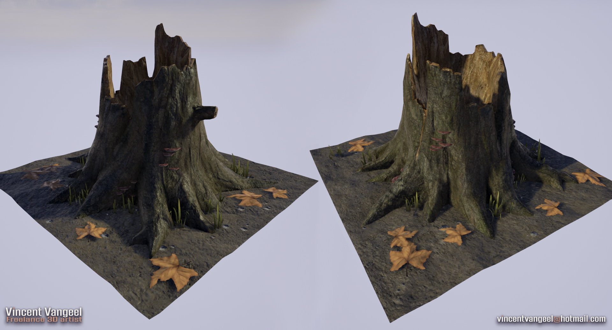
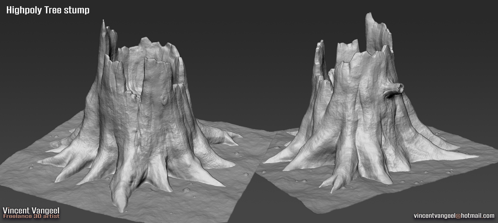
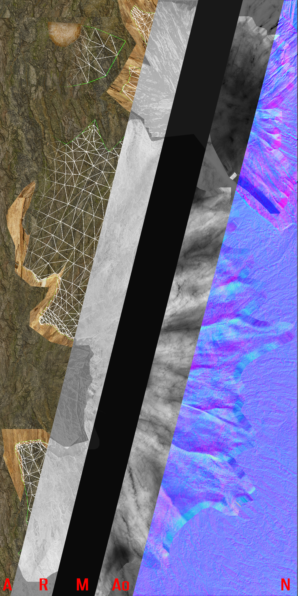
The next few renders are also from within Ue4, here I was trying to get a realistical mud material with pools of water.
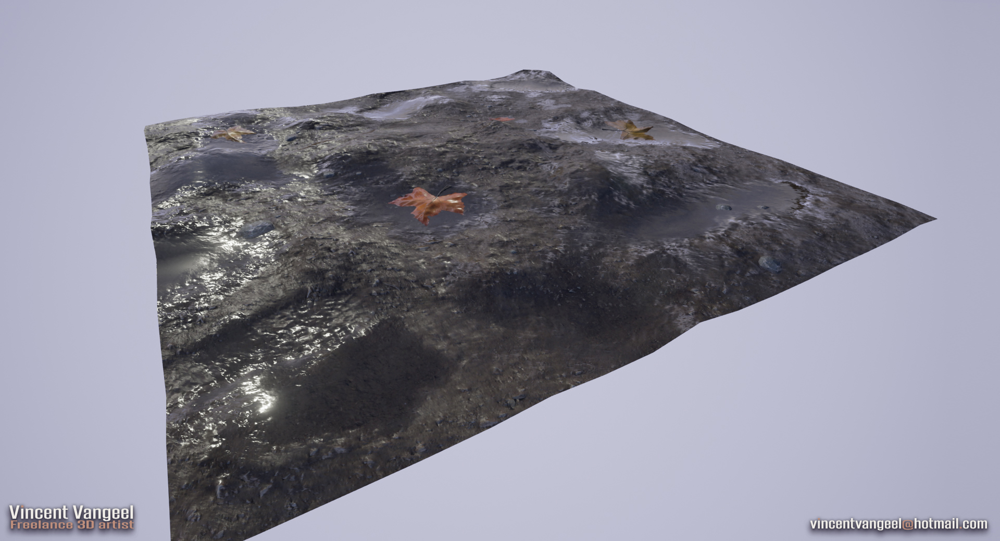
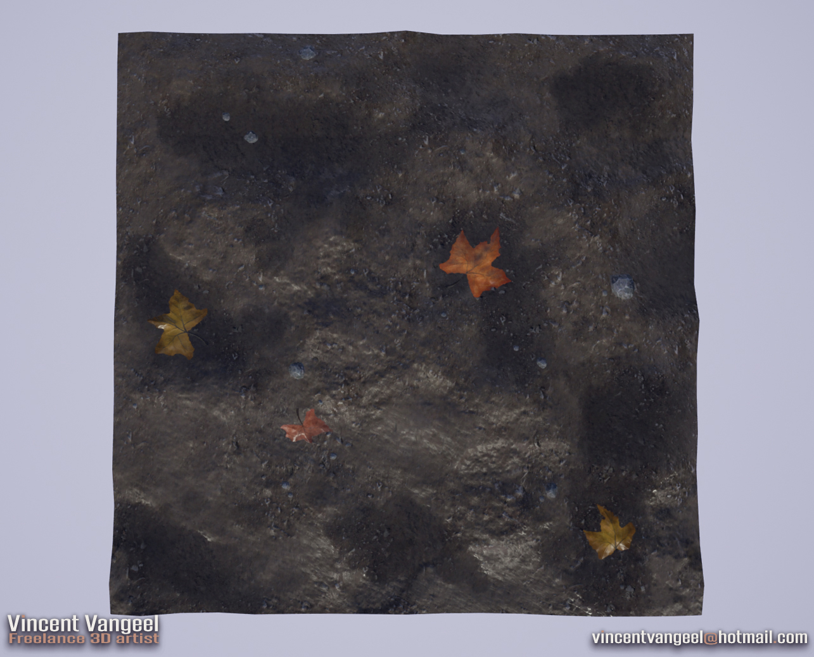
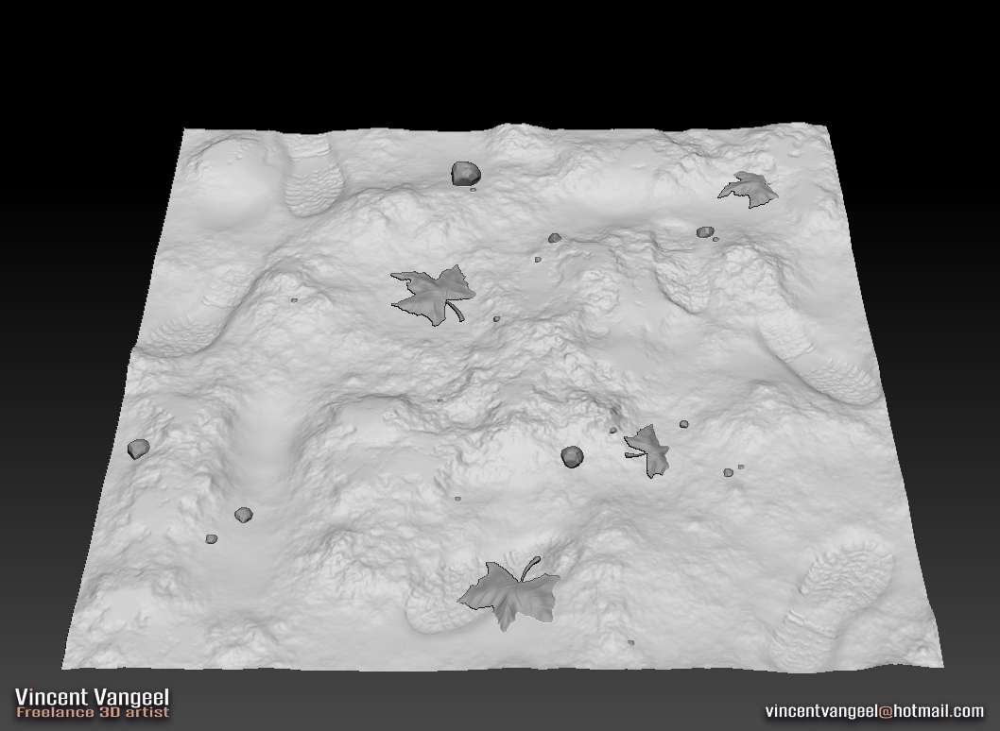
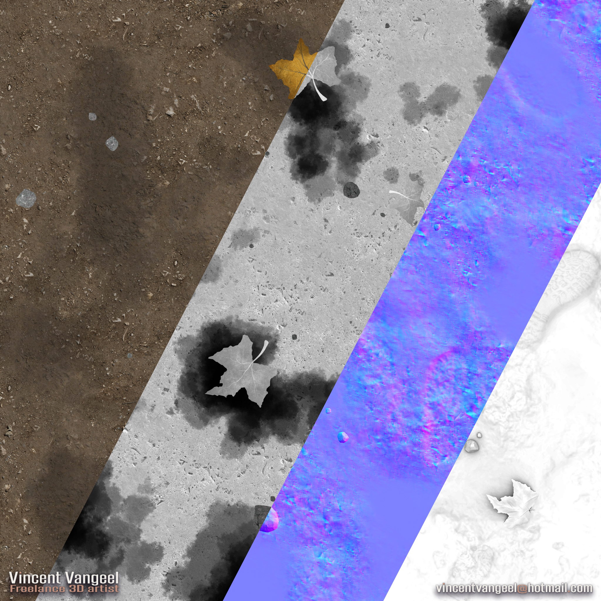
The wooden crate and potato bag was a quick exercise to get more feeling with pbr materials, and to experiment a bit with what gives good results and what not to do. It was also a good test to see if I could make seperate objects that blended together in a scene, because all I did so far was making small PBR props that only stood on themself.
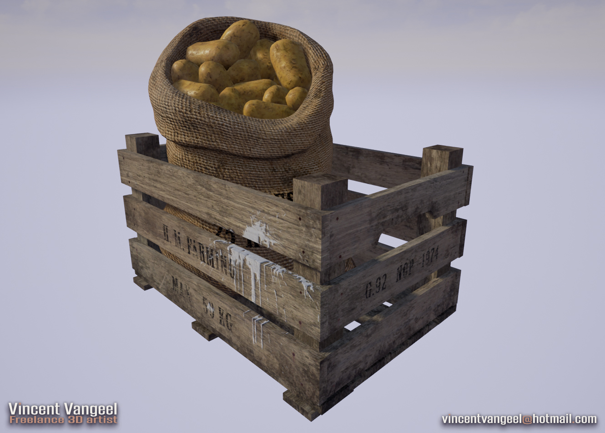
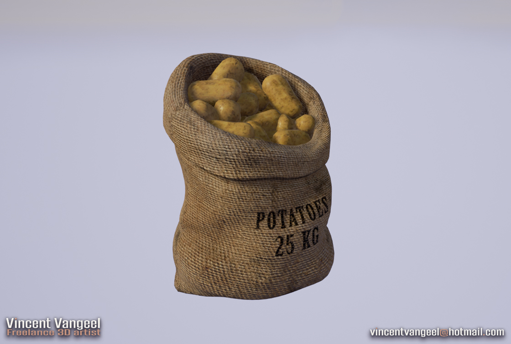
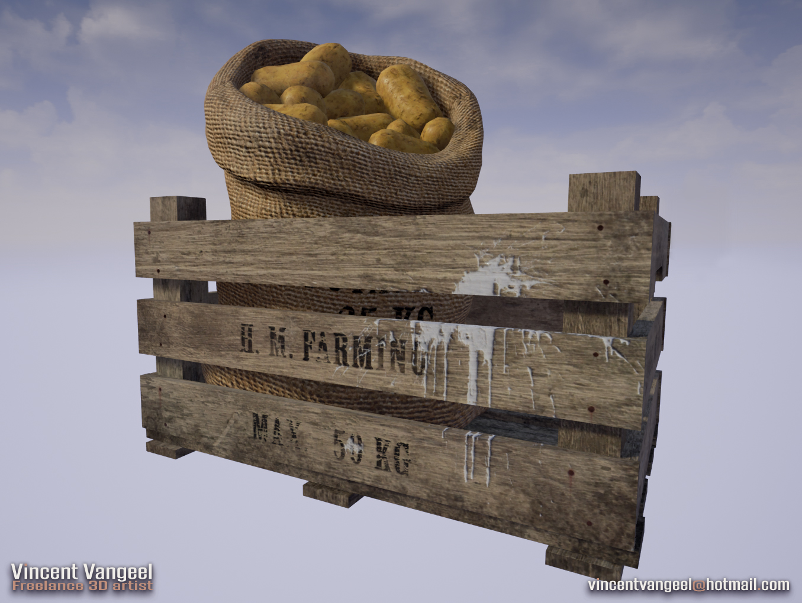
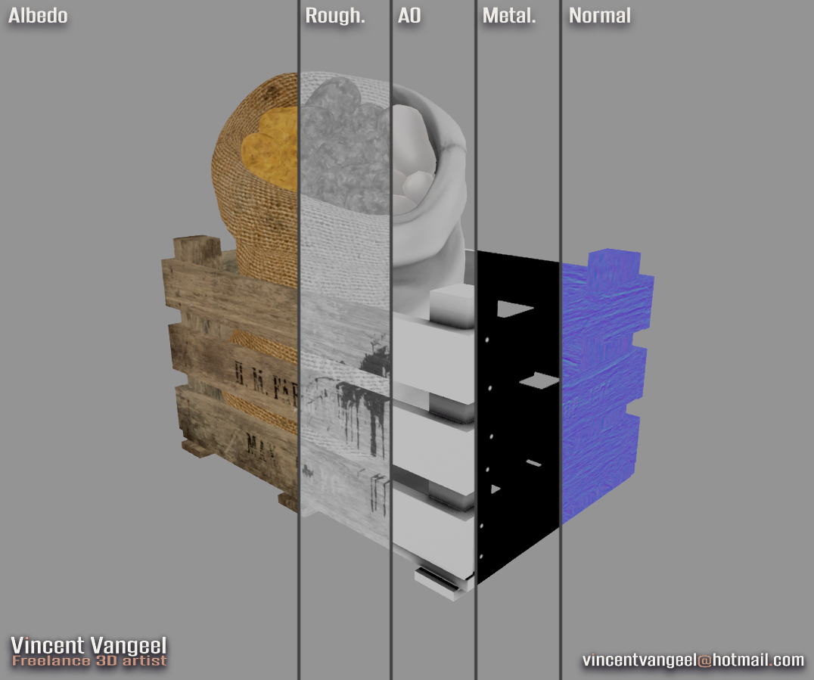 |